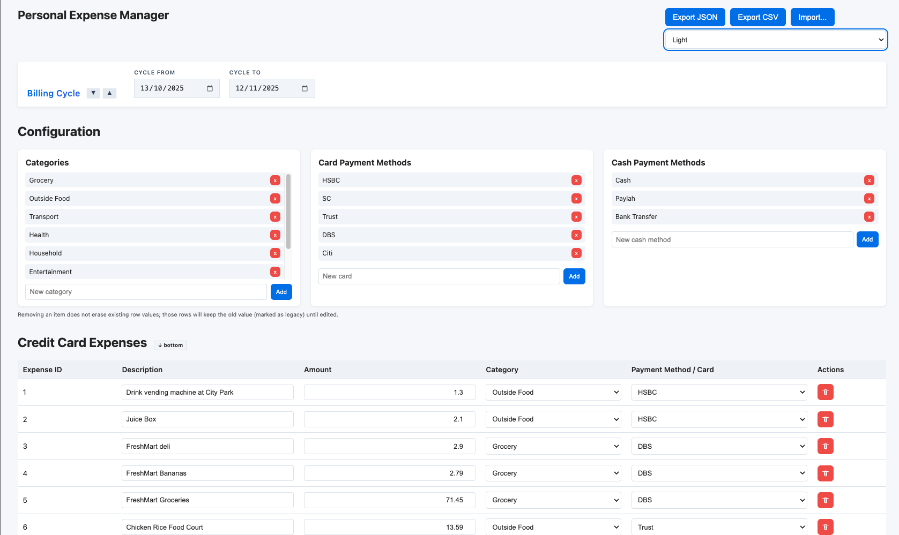
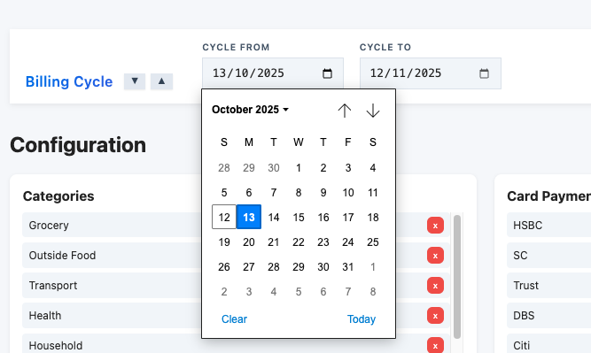
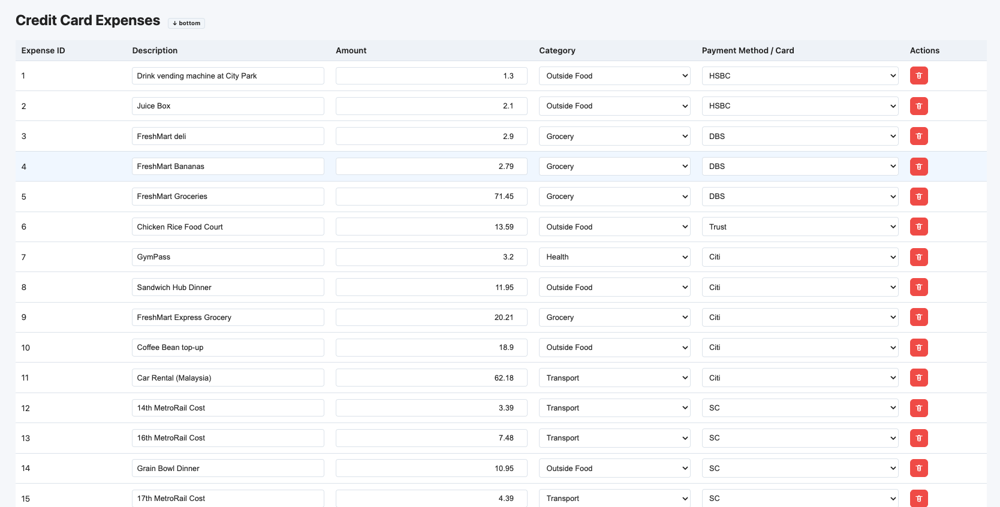
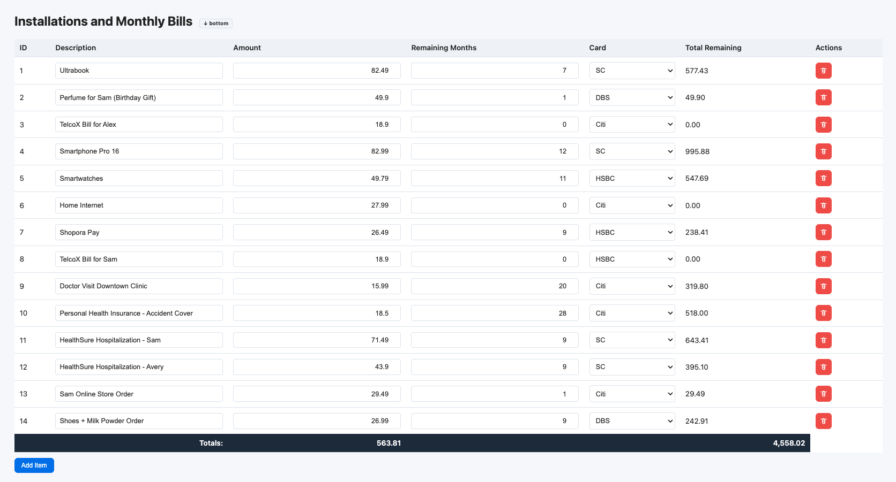
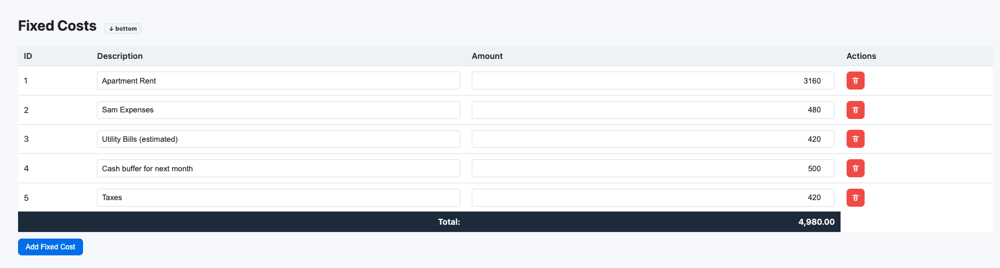
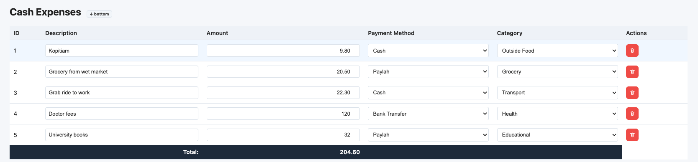
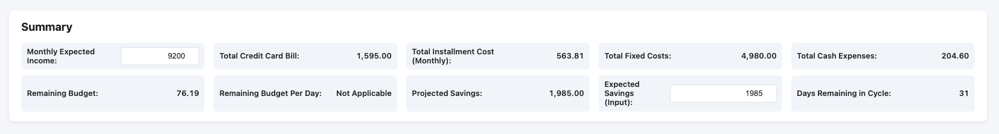
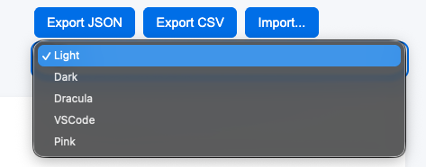

How to use
This tool helps you keep track of everyday spending, card bills, monthly subscriptions or installments, and cash expenses. It automatically totals amounts and shows a simple monthly budget picture.

1) Set up your billing cycle
- At the top of the app, set “Cycle From” and “Cycle To.” By default, it uses 15th → 15th for the current month.
- Use the small arrows to move to the previous or next cycle when reviewing past/future months.
Why this matters: your “Days Remaining in Cycle” and some budget hints use these dates.

2) Add credit card expenses
- Click “Add Expense.”
- Type a short description and the amount.
- Choose a Category and the Card you used.
The table footer shows the total of your card expenses. The “Totals by Category” and “Totals by Payment Method / Card” tables and charts update automatically.

3) Track installments & monthly bills
- Click “Add Item” in the Installments section.
- Enter the monthly amount, remaining months, and which card it’s on.
- The “Total Remaining” column multiplies amount × months for you.
The footer shows the sum of monthly amounts and the sum of all remaining totals.

4) Add fixed monthly costs
- Click “Add Fixed Cost.”
- Enter a description (e.g., Rent, Internet) and the monthly amount.
These amounts are included in the Summary so you can see the full monthly picture.

5) Track cash expenses
- Click “Add Cash Expense.”
- Enter the description, amount, payment method (e.g., Cash, Transfer), and category.
The cash table footer totals all cash/transfer expenses. These are included in your monthly summary.

6) Read the summary
- Total Credit Card Bill – sum of card expenses.
- Total Installment Cost (Monthly) – sum of all monthly installment amounts.
- Total Fixed Costs – sum of fixed monthly obligations.
- Total Cash Expenses – sum of cash/transfer spending.
- Monthly Expected Income – type your income for the cycle.
- Expected Savings (Input) – enter the savings you want to set aside.
- Remaining Budget – Income minus Card + Installments + Fixed + Expected Savings.
- Remaining Budget Per Day – Remaining Budget divided by days left in the cycle.
- Days Remaining in Cycle – based on your cycle dates.

7) Import & Export (CSV/JSON)
Use the buttons in the page header:
- Export JSON – full data with lists and inputs. Best for backups and later re-import.
- Export CSV – readable spreadsheet format with sections (Cycle, Categories, Cards, Cash Methods, Expenses, Installments, Fixed Costs, Cash Expenses).
- Import… – load a previous JSON or CSV export to restore your data.
8) Themes
Switch themes using the dropdown at the top right. Your choice is remembered and shared between pages. If you open both the app and this documentation, changing the theme on one page updates the other automatically.

9) Tips & shortcuts
- Alt + A adds a new credit card expense row (when not typing in a field).
- Click the small “↓ bottom” link below a table header to jump to the add row button.
- Use the Configuration block to add or remove Categories and Payment Methods. Removed items still appear as “(legacy)” in old rows so you don’t lose data.
10) Privacy
This is a client‑side tool. It doesn’t send your data anywhere. Your work exists in the page while it’s open. Export a file to save it for later.
11) Troubleshooting
- I lost my data – If you didn’t export, the page doesn’t keep your data after closing or refreshing. Try to use Export regularly.
- My totals look wrong – Check for empty amounts or typos (like “0.0.0”) and verify categories/cards are selected.
- Import failed – Make sure you exported from this tool. For CSV, don’t rearrange the section headers.
Need improvements? Open an issue or contribute a pull request on the project repository.